Beach Invasion est un prototype de jeu typé tower defense fortement inspiré de la série de jeux Kingdom Rush réalisé en solo sur le moteur de jeu Construct 2. Il se base sur un système labyrinthique où les tours peuvent être placées à des emplacments précis et les ennemis suivent un itinéraire donné.
Il existe basiquement deux types d'ennemis : les ennemis terrestres et les ennemis volants, avec des statistiques de points de vie et de vitesse pouvant différer. Tous suivent le tracé du labyrinthe.
Un boss conclut chaque niveau et a pour particularité de faire perdre toutes ses vies au joueur s'il atteint la zone d'arrivée.
Les tourelles se divisent quant à elles en quatre types, les mitrailleuses, les lance-missiles, les batteries anti-aériennes et les mortiers.
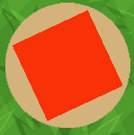La mitrailleuse est la tourelle de base. Elle peut cibler tous les ennemis, a une portée moyenne et de faibles dégâts compensés par une grosse cadence de tir. Elle a un prix de départ faible.
Le lance-roquettes est la tourelle à longue distance du jeu, elle a des dégâts élevés et peut toucher les ennemis malgré une cadence de tir faible. Son prix de départ est élevé.
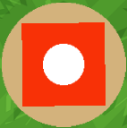La batterie anti-aérienne descend les ennemis aériens avec une cadence de tir et des dégâts supérieurs à la mitrailleuse mais sur une portée réduite et avec un prix plus élevé mais abordable.
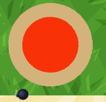Le mortier tire des projectiles lents pouvant manquer les cibles rapides et a une portée très faible mais fait des dégâts de zone énormes malgré sa très faible cadence et son prix élevé.
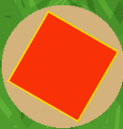Les améliorations de tourelles sont visibles et augmentent la cadence de tir ou la portée de ces dernières. Le prix d'une tourelle est augmenté à chaque fois qu'une tourelle du même type est posée ou améliorée, il est possible de les revendre pour leur prix de base mais l'inflation ne diminue pas.
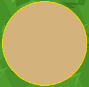Le prototype est produit sous Construct 2 et utilise les comportements de Tourelle, de Pathfinding et de Projectile. Les tourelles sont placées grâce à la souris et à des raccourcis clavier indiqués sur l'interface, le retrait se fait avec la touche "D" et l'amélioration grâce à la touche "U", il faut sélectionner un emplacement avant de pouvoir exécuter les actions choisies.
Les tourelles utilisent le comportement éponyme, elles ciblent le premier ennemi qui arrive dans leur champ de vision et lui tirent dessus jusqu'à destruction avant de passer au suivant. Elles tournent visuellement vers la direction de leur cible et n'anticipent pas les mouvements de cette dernière lors de la visée.
Les projectiles utilisent également un comportement éponyme et se détruisent à l'impact ou après avoir traversé une certaine distance. Les projectiles du mortier provoquent une explosion lors de leur destruction, laquelle endommage tous les ennemis touchés. La portée des projectiles est supérieure au champ de vision de leur tourelle.
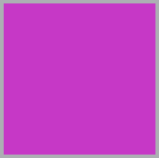Les ennemis sont mus par le comportement de Pathfinding et ont un mapping régi par des solides invisibles. Ils apparaissent au niveau d'un élément spawner avec un décompte propre à chaque ennemi. Leur arrivée est définie par un objet finish. Le nombre d'ennemis par vague est fixé par type d'ennemi. Le nombre d'ennemis en simultané est limité et la destination choisie lorsque plusieurs arrivées existent est aléatoire. Chaque ennemi atteignant une arrivée est détruit et retire une vie à l'utilisateur à l'exception du boss qui fait perdre le joueur.
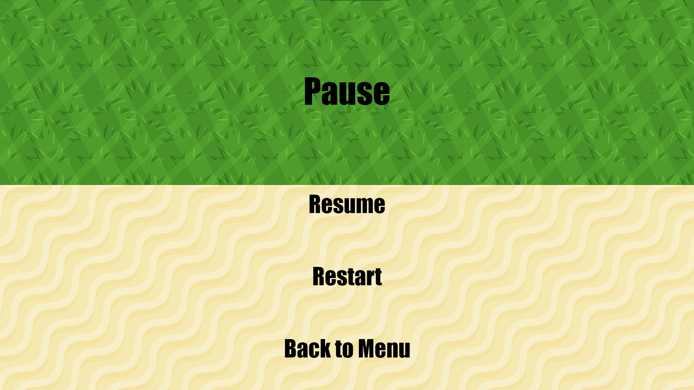Il existe un menu pause accessible en appuyant sur la touche "P". Ce menu permet de reprendre, de recommencer ou d'abandonner la partie en cours. De nombreuses variables sont globales et doivent être réinitialisées en cas de recommencement ou d'abandon de la partie.
Ce prototype a été produit en solo dans le cadre d'un projet scolaire en première année d'études supérieures. Sa dernière version date du 12 novembre 2019 et a été mon premier protoype de jeu abouti. Il m'a demandé de me familiariser avec les systèmes de Pathfinding et de Tourelle en quelques jours.
 Je me suis largement inspiré de Kingdom Rush pour ce projet, un jeu que j'aime beaucoup et ai fini plusieurs fois et dont j'ai pu comprendre certains rouages en imaginant et en développant mon prototype. Il s'agit également d'un Tower Defense utilisant un système labyrinthique avec un une séparation de dégâts magiques et physiques en plus des ennemis volants ou terrestres.
Je me suis largement inspiré de Kingdom Rush pour ce projet, un jeu que j'aime beaucoup et ai fini plusieurs fois et dont j'ai pu comprendre certains rouages en imaginant et en développant mon prototype. Il s'agit également d'un Tower Defense utilisant un système labyrinthique avec un une séparation de dégâts magiques et physiques en plus des ennemis volants ou terrestres.
Ennemis :
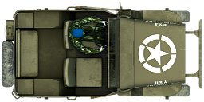
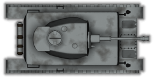
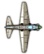
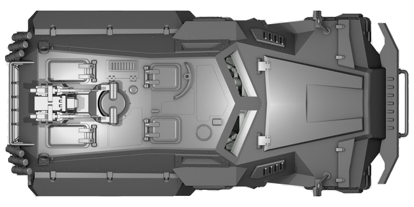
Exemple de carte :
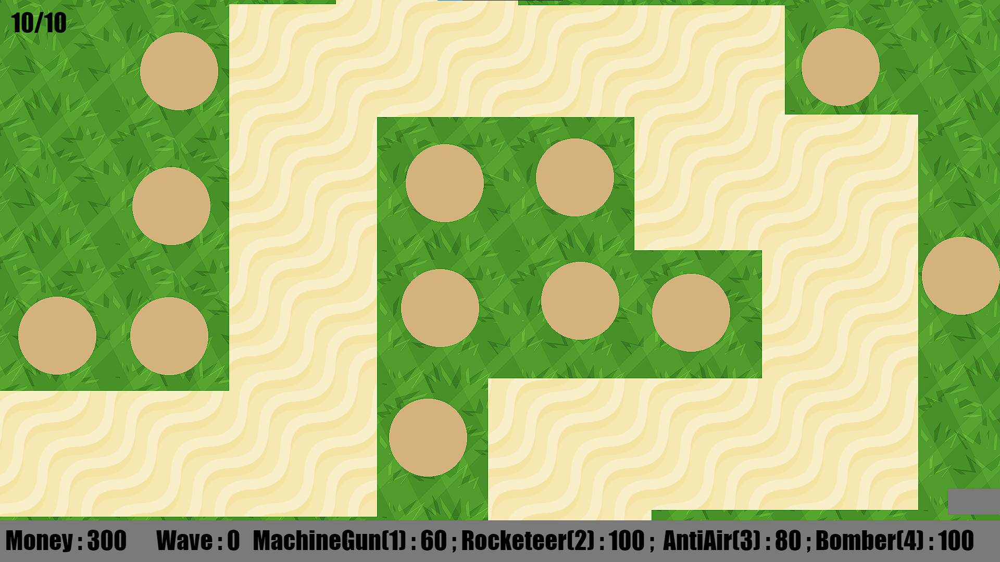


 Les portes sont reliées à des cubes spéciaux avec un emplacement. Chaque emplacement ne peut recevoir qu'une bonne réponse mais un bloc peut se trouver dans plusieurs emplacements. Ces emplacements complètent un algorithme situé en général à côté.
Les portes sont reliées à des cubes spéciaux avec un emplacement. Chaque emplacement ne peut recevoir qu'une bonne réponse mais un bloc peut se trouver dans plusieurs emplacements. Ces emplacements complètent un algorithme situé en général à côté.
 Le jeu prend des inspirations graphiques du côté de Counter Strike : Source avec le côté "blocs sans texture" et le ton orangé est gardé.
Le jeu prend des inspirations graphiques du côté de Counter Strike : Source avec le côté "blocs sans texture" et le ton orangé est gardé.
 Les environnements sont par ailleurs assez similaires et les déplacements se ressemblent assez fort. Portal a pour mécanique principale d'utiliser des portails afin de relier un point A à un point B et les puzzles sont très souvent liés à ceux-là. Le Level Design de ce jeu était une bonne base pour créer le nôtre.
Les environnements sont par ailleurs assez similaires et les déplacements se ressemblent assez fort. Portal a pour mécanique principale d'utiliser des portails afin de relier un point A à un point B et les puzzles sont très souvent liés à ceux-là. Le Level Design de ce jeu était une bonne base pour créer le nôtre.